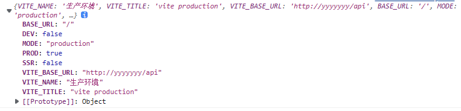
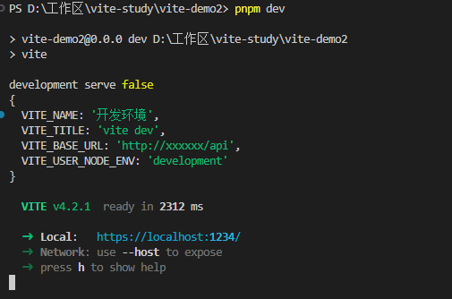
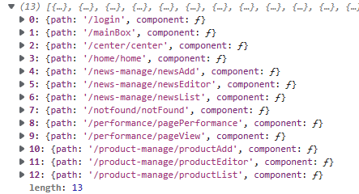
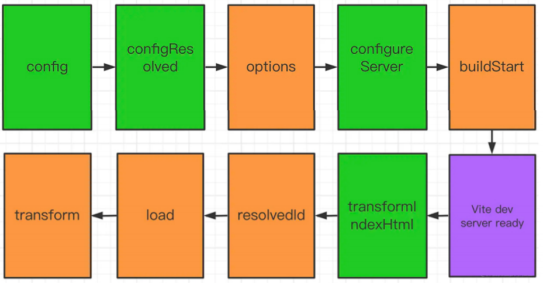

介绍
vite的基础学习，了解了常用配置，插件的编写等
# vite学习
# 1.vite是什么?
一句话说明: Vite是一 种新型的前端构建工具，它能显著改善前端开发体验。
为什么选 Vite | Vite 官方中文文档 (vitejs.dev) (opens new window)
官网详细说明为什么选vite
vite采用esm方式进行构建
ES modules (ESM)是JavaScript官方的标准化模块系统。
ESM标准规范了如何把文件解析为模块记录，如何实例化和如何运行模块。
ESM则使用称为实时绑定(Live Binding)的方式。导出和导入的模块都指向相同的内存地址(即值引用)。
所以，当导出模块内导出的值改变后，导入模块中的值也实时改变了。
什么叫 编译时输出接口? 什么叫 运行时加载?
ESM 之所以被称为 编译时输出接口，是因为它的模块解析是发生在 编译阶段。
也就是说，import 和 export 这些关键字是在编译阶段就做了模块解析，
这些关键字的使用如果不符合语法规范，在编译阶段就会抛出语法错误。
ESM 的运行机制是，JS 引擎在对脚本静态分析的时候，遇到模块加载命令import，
会生成一个只读引用。等到脚本真正执行时，再根据这个只读引用，到被加载的那个模块里面去取值。
因此，ESM 是动态引用，并且不会缓存值，模块里面的变量绑定其所在的模块。
编译时加载: ESM 不是对象，而是通过 export 命令显式指定输出的代码，import时采用静态命令的形式。
即在import时可以指定加载某个输出值，而不是加载整个模块，这种加载即所谓的“编译时加载”。
为什么说，Vite是一种新型的前端构建工具，而不称它为打包工具呢?
构建工具和打包工具的区别?
- 构建过程应该包括:预编译、语法检查、词法检查、依赖处理、文件合并、文件压缩、单元测试、版本管理等。
- 打包工具更注重打包这一过程,主要包括依赖管理和版本管理等。
# 2.什么是构建工具

构建工具，主要做以下的工作
- 代码转换：将TypeScript编译成JavaScript、将SCSS编译成CSS等。
- 文件优化：压缩JavaScript、CSS、HTML代码，压缩合并图片等。
- 代码分割：提取多个页面的公共代码，提取首屏不需要执行部分的代码让其异步加载。
- 模块合并：在采用模块化的项目里会有很多个模块和文件，需要通过构建功能将模块分类合并成一个文件。
- 自动刷新：监听本地源代码的变化，自动重新构建、刷新浏览器。
- 代码校验：在代码被提交到仓库前需要校验代码是否符合规范，以及单元测试是否通过。
- 自动发布：更新代码后，自动构建出线上发布代码并传输给发布系统。
比如我们执行一些例如CoffeeScript/ES6去代替Javascript. JS或CSS压缩、用Less去写CSS、用Jade去写HTML、用Browserify去模块化、 为非覆盖式部署的资源加MD5戳等,这些操作如果我们一遍遍手动执行，非常耗费时间和精力，所以前端构建工具，或者较前端自动化构建工具,就是用来让我们不再做机械重复的事情，解放我们的双手的
总结：构建工具就是避免机械重复的事情，让其自动化完成
# 3.依赖预构建
首次执行vite时，服务启动后会对node. modules模块和配置optimizeDeps的目标进行预构建
import { defineConfig } from 'vite'
import vue from '@vitejs/plugin-vue'
// https://vitejs.dev/config/
export default defineConfig({
plugins: [vue()],
optimizeDeps:{
//在预构建中强制排除某依赖项
// exclude:['lodash-es']
},
})

就是把那些第三方包自动加载到缓存里，引用的时候是使用esm方式引用
依赖预构建 | Vite 官方中文文档 (vitejs.dev) (opens new window)
# 4.开发服务器配置
import { defineConfig } from 'vite'
import vue from '@vitejs/plugin-vue'
import basicSsl from '@vitejs/plugin-basic-ssl'
// https://vitejs.dev/config/
export default defineConfig({
plugins: [
vue(),
//使用tsl插件
basicSsl()
],
optimizeDeps:{
//在预构建中强制排除某依赖项
// exclude:['lodash-es']
},
//开发服务器配置
server:{
//自动打开浏览器
open:true,
//开启https
https:true,
port:1234,
//设置代理
proxy:{
'/api':{
target:'https://www.bilibili.com/',
//允许跨域
changeOrigin:true,
rewrite:(path)=>path.replace(/^\/api/,'')
}
}
}
})
# 5.环境变量
环境变量和模式 | Vite 官方中文文档 (vitejs.dev) (opens new window)
.env是全局环境文件
.env.development开发环境文件
NODE_ENV=development
VITE_NAME='开发环境'
VITE_TITLE='vite dev'
VITE_BASE_URL='http://xxxxxx/api'

.env.production生产环境文件
VITE_NAME='生产环境'
VITE_TITLE='vite production'
VITE_BASE_URL='http://yyyyyyy/api'

import { defineConfig,loadEnv } from 'vite'
import vue from '@vitejs/plugin-vue'
import basicSsl from '@vitejs/plugin-basic-ssl'
//自定义配置
export default defineConfig(({mode,command,ssrBuild})=>{
console.log(mode,command,ssrBuild)
const config=loadEnv(mode,'./')
console.log(config)
return {
plugins: [
vue(),
//使用tsl插件
basicSsl()
],
optimizeDeps:{
//在预构建中强制排除某依赖项
// exclude:['lodash-es']
},
//开发服务器配置
server:{
//自动打开浏览器
open:true,
//开启https
https:true,
port:1234,
//设置代理
proxy:{
'/api':{
target:'https://www.bilibili.com/',
//允许跨域
changeOrigin:true,
rewrite:(path)=>path.replace(/^\/api/,'')
}
}
}
}
})

JavaScript API | Vite 官方中文文档 (vitejs.dev) (opens new window)
使用函数式写法，使用loadEnv加载环境变量对不同的环境进行配置
import { defineConfig,loadEnv } from 'vite'
import vue from '@vitejs/plugin-vue'
import basicSsl from '@vitejs/plugin-basic-ssl'
//自定义配置
//defineConfig接受一个函数，参数是一个对象包含mode，command,ssrBuild
export default defineConfig(({mode,command,ssrBuild})=>{
/* console.log(mode,command,ssrBuild) */
//获取当前环境变量
const config=loadEnv(mode,'./')
/* console.log(config) */
return {
plugins: [
vue(),
//使用tsl插件
basicSsl()
],
optimizeDeps:{
//在预构建中强制排除某依赖项
// exclude:['lodash-es']
},
//开发服务器配置
server:{
//自动打开浏览器
open:true,
//开启https
https:true,
port:1234,
//设置代理
proxy:{
'/api':{
target:config.VITE_TARGET,
//允许跨域
changeOrigin:true,
rewrite:(path)=>path.replace(/^\/api/,'')
}
}
}
}
})
# 编写环境变量类型文件
src/env.d.ts
/// <reference types="vite/client" />
interface ImportMetaEnv{
readonly VITE_NAME:string
readonly VITE_TITLE:string
readonly VITE_BASE_URL:string
readonly VITE_TARGET:string
}
interface ImportMeta{
readonly env:ImportMetaEnv
}
# 6.postCss配置
# 1.安装依赖
pnpm add postcss-nested
export default defineConfig({
plugins:[vue()],
css:{
postcss:{
plugins:[
//css嵌套书写插件
postcssNested()
]
}
},
})
配置一般postcss插件
如果需要使用less直接安装依赖即可，不用配置
# 7.vite路径别名
共享配置 | Vite 官方中文文档 (vitejs.dev) (opens new window)
当使用文件系统路径的别名时，请始终使用绝对路径。相对路径的别名值会原封不动地被使用，因此无法被正常解析。
export default defineConfig({
plugins:[vue()],
resolve:{
alias:{
'@':'/src'
}
}
})
# 8.批量导入
功能 | Vite 官方中文文档 (vitejs.dev) (opens new window)
///<reference types="vite/client"/>
import type {RouteRecordRaw} from 'vue-router'
export interface ImportMeta{
routes:RouteRecordRaw[]
}
const modules=import.meta.glob(['./src/views/**/*.vue','!./src/views/user-manage/*.vue'],{
eager:false,
})
export function formatPath(url:string){
url='/'+url
return url.replace('./src/views/','').replace('.vue','').replace(/((?<=\/)[A-Z])/gm,(sub)=>{
return sub.toLocaleLowerCase()
})
}
export function returnRoutes():RouteRecordRaw[]{
const res:RouteRecordRaw[]=[]
for(let i of Object.keys(modules)){
let route:RouteRecordRaw={
path:formatPath(i),
component:modules[i]
}
res.push(route)
}
return res
}
console.log(returnRoutes())

使用glob批量导入然后配置成路由格式
# 9.插件
插件 API | Vite 官方中文文档 (vitejs.dev) (opens new window)
vite插件钩子加载顺序

插件示例
export default function () {
return {
// 显示在 warning 和 error 中，用于警告和错误展示
name: "hooks-order",
// 初始化hooks，只走一次。服务器启动时被调用
options(opts) {
console.log("options");
},
// 启动时调用一次
// vite （本地）服务启动时调用，在这个函数中可以访问 rollup 的配置
buildStart() {
console.log("buildStart");
},
// vite特有钩子，在解析 Vite 配置前调用。
// 接收原始用户配置（命令行选项指定的会与配置文件合并）
// 和一个描述配置环境的变量
config(userConfig, env) {
console.log("userConfig");
return {};
},
// Vite配置确认，在解析 Vite 配置后调用
configResolved(resolvedCofnig) {
console.log("configResolved");
},
// 用于配置dev server，可以进行中间件操作
configureServer(server) {
console.log("configureServer");
// server.app.use((req, res, next) => {
// // custom handle request...
// })
},
// 用于转换宿主页，接收当前的 HTML 字符串和转换上下文
transformIndexHtml(html) {
console.log("transformIndexHtml");
return html;
// return html.replace(
// /<title>(.*?)</title>/,
// `<title>Title replaced!</title>`
// )
},
// 通用钩子，创建自定义确认函数
resolveId(source) {
// console.log(resolveId)
if (source === "virtual-module") {
console.log("resolvedId");
return source;
}
return null;
},
// 创建自定义加载函数，可用于返回自定义的内容
load(id) {
console.log("load");
if (id === "virtual-module") {
return 'export default "This is virtual!"';
}
return null;
},
// 可用于转换已加载的模块内容（转变源码为需要的代码）
transform(code, id) {
console.log("transform");
if (id === "virtual-module") {
}
return code;
},
};
}
# 虚拟模块
虚拟模块是 Vite 沿用 Rollup 的虚拟模块，虚拟模块类似 alias 别名，
但是模块的内容并非直接从磁盘中读取，而是编译时生成。
虚拟模块是一种很实用的模式，使你可以对使用 ESM 语法的源文件传入一些编译时信息。
export default function myPlugin() {
//项目中使用的虚拟模块名称
const virtualModuleId = 'virtual:my-module'
//加上\0内部模块使用的名称
const resolvedVirtualModuleId = '\0' + virtualModuleId
return {
// 必须的，将会在 warning 和 error 中显示
name: 'my-plugin',
//在每个传入【模块请求】时被调用
// 以下钩子会在每个传入模块请求时被调用
// 换言之，不请求虚拟模块，就不会触发 resolvedId()
// 可用于定义自定义的 id 路径解析器，
// 比如可以拿到import foo from './foo.js'中的./foo.js，
// 一般用来定位第三方依赖，找到对应的文件
// 真实虚拟模块 ID 转换为内部虚拟模块 ID。
//id为模块名，解析时调用，传递给下一个钩子的入参
resolveId(id) {
if (id === virtualModuleId) {
console.log('resolveId',id)
//返回id
return resolvedVirtualModuleId
}
},
//模块加载时调用
// 在加载文件内容的钩子中返回这个虚拟模块的内容
load(id) {
if (id === resolvedVirtualModuleId) {
console.log('load',id)
return `export * as test from './test'`
}
}
}
}
使用
//@ts-ignore
import {test} from 'virtual:my-module'
# transform钩子
import { Plugin } from "vite";
export default function (ops: Record<any, any> = {}): Plugin {
return {
name: "vite-plugin-demo",
transform(code, id, options) {
//转换图片
if (id.match(/(.jpg|.png|.jpeg|.webp)$/)) {
console.log(id);
console.log(code);
return `export default "/src/assets/2054179.jpg"`;
}
//处理css
/* if(id.match(/(.css)$/gim)){
console.log(id)
//这里是css代码
console.log(code)
return code
} */
//处理vue
if (id.match(/(Item.vue)$/gim)) {
return `
import {h, defineComponent} from "vue";
const _sfcComp= defineComponent({
name: "ItemVue22",
});
console.log( defineComponent )
// 对setup函数进行封装，返回options的对象；
// 最重要的是：在TypeScript下，给予了组件
// 正确的参数类型推断 。
const _sfc_render =() => {
return h("div", {
innerHTML: '<h1>我是一个组件22222222</h1>',
})
};
_sfcComp.render = _sfc_render
export default _sfcComp
`;
}
},
};
}
# load钩子
浏览器发起请求以后，dev server 端会通过 middlewares 对请求做拦截，
然后对源文件做 resolve、load、transform 等操作，
然后再将转换以后的内容发送给浏览器。
resolveId 就是去找到对应的文件，输出本地的实际的路径，
load 输出是文件模块的代码字符串
加载本地文件到内存中
当然了你也可以在load里修改一下源码，
然后再传入到 transform
transform 就是将源码转变成目标代码
在这里进一步对源码进行操作
转换完成的内容直接返回给浏览器
它处理的是模块
【load 与 transform】：
共同点：
- 是它们都能修改内容；
区别是：
- load，它处理的是文件
- transform，它转换的是模块
- 所以在load中，可以直接写，之类的代码
- 但在 transform 中，就要通过h渲染函数
load(id)：
在每个传入模块请求时被调用，可以自定义加载器，可用来返回自定义的内容
输出是文件模块的代码字符串，默认就是直接读取文件内容并返回
在解析模块时调用，也可以修改返回代码，来指定某个 import 语句加载特定的模块
import { Plugin } from "vite";
export default function (ops: Record<any, any> = {}): Plugin {
return {
name: "vite-plugin-demo",
load(id, options) {
if(id.match(/(Item.vue)$/gim)){
console.log(id,options)
return `
<template>
<div>
我修改了组件
</div>
<AA/>
</template>
<script setup lang="ts">
import AA from './aa.vue'
</script>
<style scoped>
</style>
`
}
},
};
}
# 9.插件实战
# 1.md转vue插件
目前多数博客提供的解决方案：
- 利用markdown的解析库将md解析成html内容
- 在业务中编写一个组件，将前一步解析出的html文本作为v-html属性的值
需求：将md文件直接导入成可使用的vue组件
# 1.安装依赖
pnpm add marked
# 2.实现
import { Plugin } from 'vite';
import {marked} from 'marked'
export default function ():Plugin{
return {
name:'vite-plugin-mdToVue',
load(id, options) {
},
transform(code, id, options) {
if(id.match(/(.md)$/)){
console.log(id)
console.log(marked(code))
return `
import {h,defineComponent} from "vue"
let _mdObj=defineComponent({
name:"mdItem"
})
let md_render=()=>{
return h("div",{
innerHTML:${JSON.stringify(marked(code))}
})
}
_mdObj.render=md_render;
export default _mdObj
`
}
},
}
}
# 2.自动生成vue-router路由
import type {Plugin} from 'vite'
import fs from 'fs'
import path from 'path'
function readFiles(src:string){
let fileNames=fs.readdirSync(src)
let res:{name:string,path:string}[]=[]
fileNames.forEach(item=>{
const fileDir=path.join(src,item)
const state=fs.statSync(fileDir)
//判断为是文件夹
if(state.isDirectory()){
res.push(...readFiles(fileDir))
}
if(state.isFile()){
const file=path.parse(fileDir)
if(file.ext=='.vue'){
res.push({
name:file.name,
path:fileDir.replace(/\\/gim,'/')
})
}
}
})
return res
}
function returnRoutes(files:ReturnType<typeof readFiles>,src:string){
return files.map(item=>{
const path=item.path.replace(src.substring(2),'')
const root=src.replace('./src','@')
const temp=path.replace(/(.vue)/gim,'').split('/');
temp[temp.length-1]=temp[temp.length-1].toLocaleLowerCase()
return {
name:item.name,
path:temp.join('/'),
component:`()=>import('${root+path}')`
}
})
}
function stringify(obj:ReturnType<typeof returnRoutes>){
try {
return JSON.stringify(obj,(key,value)=>{
if(key=='component'){
return `${value}`
}else{
return value
}
})
} catch (error) {
console.error(error)
}
}
/* console.log(formatPath(readFiles('./src/views'),'./src/views')[0].component()) */
/* console.log(formatPath(readFiles('./src/views'),'./src/views')) */
export default function():Plugin{
const virtualModuleId = 'virtual:automated-routes'
const resolvedVirtualModuleId = '\0' + virtualModuleId
return {
name:'vite-plugin-vue-router',
resolveId(source, importer, options) {
if (source === virtualModuleId) {
return resolvedVirtualModuleId
}
},
load(id, options) {
if(id===resolvedVirtualModuleId){
return `export const routes=${stringify(returnRoutes(readFiles('./src/views'),'./src/views'))}
export const parse=(str)=>{
try {
return JSON.parse(str,(key,value)=>{
if(key=='component'){
return new Function(value)
}else{
return value
}
})
} catch (error) {
console.error(error)
}
}
`
}
},
}
}
主要逻辑就是通过虚拟模块导出，但是返回的时候需要拼接好字符串
///<reference types="vite/client"/>
import type {RouteRecordRaw} from 'vue-router'
export interface ImportMeta{
routes:RouteRecordRaw[]
}
const modules=import.meta.glob(['./src/views/**/*.vue','!./src/views/user-manage/*.vue'],{
eager:false,
})
export function formatPath(url:string){
url='/'+url
return url.replace('./src/views/','').replace('.vue','').replace(/((?<=\/)[A-Z])/gm,(sub)=>{
return sub.toLocaleLowerCase()
})
}
export function returnRoutes():RouteRecordRaw[]{
const res:RouteRecordRaw[]=[]
for(let i of Object.keys(modules)){
let route:RouteRecordRaw={
path:formatPath(i),
component:modules[i]
}
res.push(route)
}
return res
}
使用vite的global批量导入，然后拼接组装成路由格式
# 3.控制台输出预览二维码
做移动端网页的时候，需要在手机上预览页面
一般的做法就是将dev服务的地址复制到手机上，再打开看
步骤比较繁琐。
我们在控制台输出网址的二维码，手机扫码打开网页，提高效率
qrcode-terminal - npm (npmjs.com) (opens new window)
# 1.安装依赖
pnpm add qrcode-termina
# 2.编写插件
import { Plugin, ResolvedServerOptions, ServerOptions } from 'vite';
import qrCode from 'qrcode-terminal'
export default function():Plugin{
let serverConfig:ServerOptions & ResolvedServerOptions
return {
name:'vite-plugin-qrCode',
configResolved(config) {
serverConfig=config.server
},
configureServer(server){
return ()=>{
server.middlewares.use((req,res,next)=>{
let {host,port}=serverConfig
let url=`http://${host}:${port}`
if(typeof host!=='string'){
url='http://10.44.18.71:5173/'
}
qrCode.generate(url,{small:true})
next()
})
}
}
}
}

# 4.vite-plugin-mooc
Mock.js (mockjs.com) (opens new window)
实现其实就是本地启动了一个服务，然后进行一些数据和模拟请求的各个配置
# 1.安装依赖
pnpm add vite-plugin-mock mockjs -D
# 2.配置插件
import { defineConfig } from 'vite'
import vue from '@vitejs/plugin-vue'
import {viteMockServe} from 'vite-plugin-mock'
// https://vitejs.dev/config/
export default defineConfig({
plugins: [
vue(),
viteMockServe({
//mock文件夹的地址
mockPath:'./src/mock',
supportTs:true,
//开发环境使用
localEnabled:true,
//生产环境禁用
prodEnabled:false
})
],
})
# 3.编写mock文件
import { MockMethod } from "vite-plugin-mock";
import { mock } from "mockjs";
let _data = mock({
"mockData|10": [
{
// 生成指定数据，随机生成1-4个指定字符串
"string|1-4": "学习",
// 随机生成不定长度文本 word
string: "@cword(3,10)",
// 随机生成标题 title 和句子 sentence
title: "@ctitle(3,10)",
sentence: "@csentence(20,30)",
// 生成段落文本 paragraph.句子和段落的区别：一个是逗号，一个是句号。
paragraph: "@cparagraph",
// @name，生成中文，没有c则生成英文
cnname: "@name",
// 随机生成1-100范围内的数字
"number|1-100": 1,
// 生成增量id标识
id: "@increment()",
// 随机生成身份证号码、人名、地址信息
idCard: "@id()",
name: "@cname()",
address: "@city(true)", //加true显示省级和市级，没有则显示市级
// 随机生成一张指定图片
img_url: "@image('25,25','#fff','#e35ef1','png','我是老尚')",
//参数解释：图片宽高、背景颜色、文本颜色、图片类型、文本信息
// 随机生成时间日期
tile_date: "@date(yyyy-MM-dd hh:mm:ss)",
// 随机生成指定范围的数组信息，随机生成10-25份信息。
"list|10-25": [
{
idCard: "@id()",
name: "@cname()",
address: "@city(true)",
},
],
},
],
});
export default <MockMethod[]>[
{
url: "/mock/api",
method: "get",
timeout: 500,
statusCode: 200,
response: {
code: 200,
message: "请求数据成功",
data: _data,
},
},
{
url: "/mock/api/user",
method: "post",
timeout: 500,
response: (opt: any) => {
return {
...opt,
};
},
},
];

# mock优点
- 前后端分离，
- 可随机生成大量的数据
- 用法简单
- 数据类型丰富
- 可扩展数据类型
- 在已有接口文档的情况下，我们可以直接按照接口文档来开发，将相应的字段写好，在接口完成 之后，只需要改变url地址即可。
# 4.原理
import { Connect, Plugin } from 'vite';
import mock from '../../mock'
export default function():Plugin{
console.log(mock)
function getMockUrlFn(req:Connect.IncomingMessage){
const data=mock.find(item=>(item.url===req.url && req.method?.toLocaleLowerCase()===item.method))
return data
}
return {
name:'vite-plugin-mock',
configureServer(server){
server.middlewares.use((req,res,next)=>{
const data=getMockUrlFn(req)
if(data){
res.setHeader("content-type","application/json")
res.end(JSON.stringify(typeof data.response=='function'?data.response():data.response))
}else{
next()
}
})
}
}
}
请求数据
fetch('/mock/api/user',{
method:'post',
headers:{
'content-type':'application/json'
},
}).then(res=>{
return res.json()
}).then(res=>{
console.log(res)
})
# 5.拷贝文件
对博客项目进行自动化
import fs from 'fs'
import path from 'path'
//源目录
const src=path.resolve(process.cwd(),'./blogs')
//目标目录
const dist=path.resolve(process.cwd(),'./dist')
//获取要复制的文件目录
function recordDirs(src:string,sign:string){
let res:string[]=[]
const dirs=fs.readdirSync(src)
dirs.forEach(item=>{
const fileDir=path.join(src,item)
const state=fs.statSync(fileDir)
if(state.isDirectory()){
if(fileDir.includes(sign)){
res.push(fileDir)
}else{
res.push(...recordDirs(fileDir,sign))
}
}
})
return res
}
//复制当前文件夹到指定目录
function copyDir(src:string,dist:string){
const dir=dist+'\\blogs'+src.split('blogs')[1]
const sourceFile=fs.readdirSync(src)
if(!fs.existsSync(dir)){
fs.mkdirSync(dir,{recursive:true})
}
sourceFile.forEach(file=>{
const fileDir=path.join(src,file)
const state=fs.statSync(fileDir)
if(state.isFile()){
//复制文件到指定目录
fs.copyFileSync(fileDir,dir+'\\'+file)
}
})
}
interface Options{
src:string,
dist:string,
sign:string
}
//执行复制
function copy({src,sign,dist}:Options){
const dirs=recordDirs(src,sign)
dirs.forEach(dir=>{
console.log(`========开始拷贝文件夹：${dir}========`)
copyDir(dir,dist)
})
console.log(`----------执行完成----------`)
}
copy({
sign:'.assets',
src,
dist
})